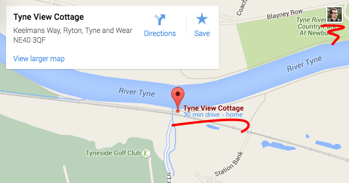

Accredible Embeddable Certificate Customiser
Select Your Credential
I don't have an API-KEY to do this...
Customise Your Credential
Copy this HTML snippet to your site
{{ html }}
Preview
Notes
I'm just adding notes as I go...
Static File Server
In order to properly use proper angular templates, we need to use http:// rather than file://
npm install http-server -g http-server
SASS compilation
sass --sourcemap=none --watch css/style.scss:css/style.css
Todo
- Simple service to share the current credential ID
- Get an API KEY so I can list all credentials
Feedback
Instead of rendering basic HTML (<img> + <a>) I think a hosted, embedded <iframe> would have much more scope for usability and future changes.
Since <iframes> can be session-aware, accredible could taylor the viewing experience to the current user, ie:

When I view a Google map I can: star the location, get directions etc.
For accredible this could be a similar service: prompt to register / login, star this course etc.
Summary / Specification
Embeddable certificate customiser
Description
I, as a certificate recipient would like to be able to embed my certificate in my website. I’d like to be able to customise the embed to change its size and which elements are included.
Deliverables
- A repository of the code you produced.
- A quick video where you demo the project (production values aren't important - just how you'd show the project to us in person)
Assessment Guidelines
- This should take around 3 hours to get something usable finished
- Take as long as you like
- First and foremost, fulfill the requirements
- Go ahead and use boilerplates
- Ask as many questions as you need to
Tools
- Public Accredible API: http://docs.accrediblecredentialapi.apiary.io/
- Example, reliable credentials
- https://api.accredible.com/v1/credentials/10000005
- Credential preview images are found at https://s3.amazonaws.com/staging_accredible_api_mails/10000005
- Credentials should link to https://www.credential.net/10000005
- Other resources:
- An example certificate for reference: https://www.credential.net/10000005
- Public Accredible API: http://docs.accrediblecredentialapi.apiary.io/